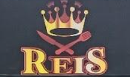

Jônatas de Souza dos Reis
Informações pessoais
Formação: Cursando ensino superior
Endereço de e-mail: jonatas@gmail.com
Telefone: (41)911119999
Estado civil: Solteiro
Resumo
Como estudante de Sistemas de Informação,
tenho grande interesse em Desenvolvimento Web e bancos de dados SQL e NoSQL.
Estou comprometido com o aprendizado constante, me mantendo atualizado com as novas tecnologias,
e tenho habilidades interpessoais e experiência em trabalho em equipe e atendimento ao público.
Sou adaptável, proativo e flexível, sempre pronto para aprender e contribuir com a organização.
ao público.
Objetivo
Busco oportunidades de trabalho na área de T.I,
com foco em desenvolvimento web e banco de dados. Meu objetivo é continuar aprendendo
e crescer profissionalmente, contribuindo para o crescimento da empresa com dedicação
e comprometimento, seguindo as normas e metas estabelecidas.
Experiências
Stefanini
Como Analista de Estoque na Stefanini, trabalhando com o cliente O Boticário,
minhas responsabilidades vão além da logística e incluem suporte e Field.
Algumas das funções que desempenho são:
Formatação de máquinas com PXE;
Configuração da BIOS;
Manutenção de Hardware;
Suporte;
Gerenciamento de estoques de matéria-prima e produtos acabados;
Realização de inventários físicos e sistêmicos para garantir a acuracidade dos registros;
Controle de entrada e saída de mercadorias, verificando as quantidades e prazos de validade;
Monitoramento dos níveis de estoque para garantir a disponibilidade de produtos para venda;
Análise de indicadores de desempenho, como o giro de estoque e o índice de ruptura;
Identificação e correção de desvios e falhas nos processos de estoque;
Elaboração de relatórios gerenciais e apresentação de informações relevantes sobre o estoque para a equipe de gestão;
Trabalho em colaboração com outras áreas da empresa, como compras e vendas, para garantir o adequado suprimento e escoamento de mercadorias.
Análise e gerenciamento de ativos, via sistema Service Now.
Montagem de gráficos estatísticos no sistema Service Now.
Realização de auditorias semanais para controle de estoques de outras localidades do Brasil.
Pacote Office.
Controle e lançamento de notas fiscais.
Reis Restaurante e Lanchonete

Realização de atendimento de clientes no balcão da loja, apresentando as opções de produtos disponíveis e destacando suas vantagens para impulsionar as vendas.
Verificação de preços e mudança de etiquetas com base na redução ou aumento de valores, garantindo a atualização dos registros.
Anotação precisa de pedidos, cupons, cartões de fidelidade e notas fiscais, tanto em formato impresso quanto eletrônico, para controle efetivo do processo de vendas.
Manutenção da limpeza e organização do ambiente de trabalho, proporcionando um espaço agradável para colaboradores e clientes.
Identificação e comunicação imediata da necessidade de reposição de mercadorias aos encarregados, assegurando a organização e o controle do estoque.
Análise criteriosa das condições das mercadorias, recolhendo as que estiverem violadas ou com prazo de validade vencido e comunicando o setor responsável para garantir a qualidade dos produtos servidos aos clientes.
Prestação de atendimento de qualidade, com foco na satisfação das necessidades dos clientes de forma ágil e eficiente.
Reposição do estoque de condimentos e das estações de bebidas para atender à quantidade prevista de clientes.
Gerenciamento das entregas de clientes e auxílio na preparação dos pedidos, garantindo a máxima satisfação dos clientes.
Formação acadêmica
- Tecnologia da informação, cursando 4º período de Bacharelado em Sistemas de Informação;
Faculdades da Indústria IEL, São José dos Pinhais.
- Tecnologia da informação, cursando técnico em JavaScript avançado e HTML;
Plataforma online de cursos Udemy.
- Tecnologia da Informação, cursando consultor SAP ABAP.
Academia Stefanini.
Habilidades
- Atendimento ao público;;
- Gerenciamento de estoque;
- Noções básicas em linguagem de programação C, SQL e NoSQL, Python e programação orientada a objetos em Java;
- Conhecimentos em desenvolvimento web, incluindo HTML, CSS e JavaScript.
- Noções básicas com banco de dados, MySQL e Mongo DB;
- Conhecimento básico em redes de computadores e protocolos de comunicação;
- Capacidade de aprender rapidamente novas tecnologias e se adaptar a mudanças;
- Boa comunicação oral e escrita para interagir com colegas, clientes e usuários finais;
- Habilidades com UML;
- Bom raciocínio lógico;
- Pacote Office;
- Trabalho com sistema ServiceNow;
- Auditorias;
- Gerenciamento de ativos;
- Comunicação clara e eficaz;
- Trabalho em equipe e colaboração;
- Capacidade de solucionar problemas e tomar decisões;
- Organização e gerenciamento de tempo;
- Capacidade de trabalhar sob pressão;
- Flexibilidade e adaptação a mudanças;
- Conhecimentos em informática e tecnologia;
- Habilidade para aprender rapidamente;
- Criatividade e pensamento crítico;
- Proatividade e iniciativa;
- Foco em resultados e objetivos;
- Capacidade de liderança e gestão de pessoas;
- Capacidade de negociação e persuasão;